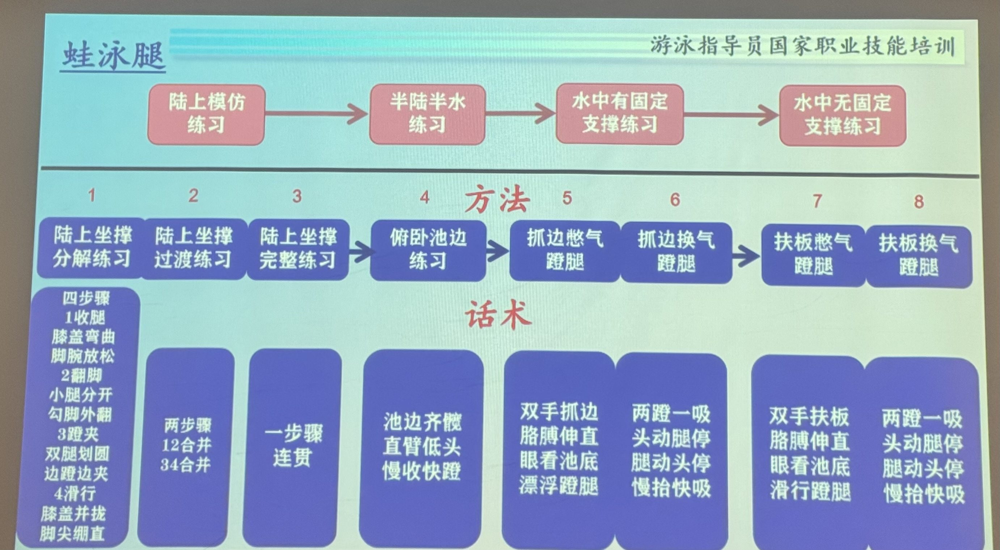
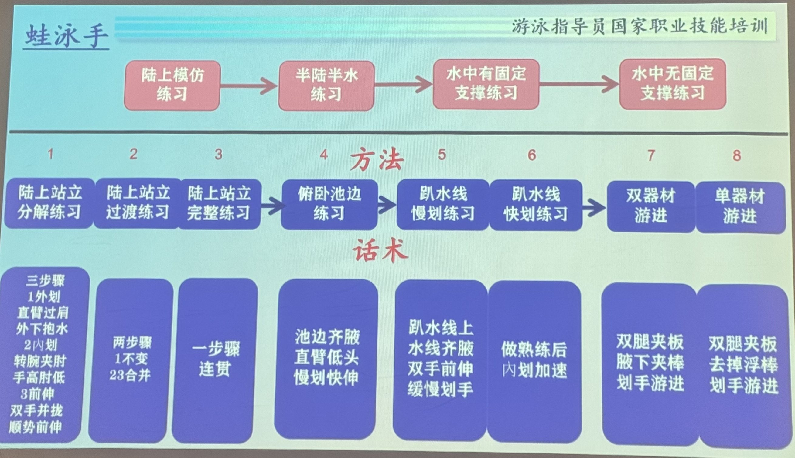
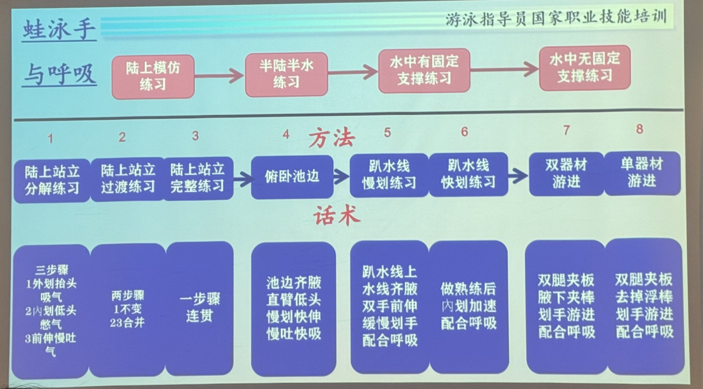
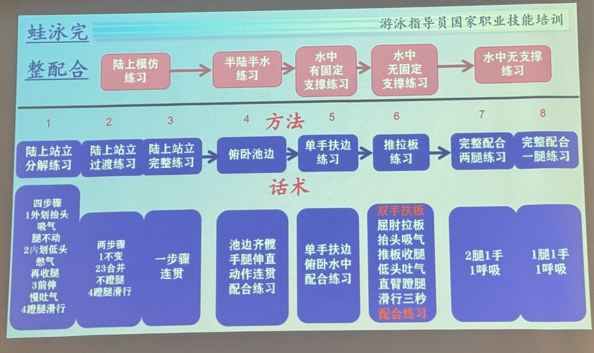

分解练习
C1-D- 下打
- 髋带大腿下摆，膝自然微屈，小腿随后伸展下鞭。
- 上抬
- 腿伸长向上回，脚跟回近水面。
- 脚踝
- 放松脚踝，不勾脚。
- 交替
- 一腿下打、一腿上抬；幅度随身位调整。
分解看要点，过渡记衔接，连贯练节奏。
髋带动，膝踝跟随；下打与上抬完整，左右交替。
起始 侧卧垫上，只示意上侧腿；翻身换腿。左右交替先口述，再到水中检验。
摆位低、稳、防滑的池边坐撑，小腿入水；脚不碰壁，起身时先停脚。
观察左右脚能反向、踝不持续勾起；随后扶壁复测，不以坐姿表现代替俯卧腿。
注意可选项；坐姿屈髋不等于俯卧打腿，不能用本项判断腿部推进技术。
肩前入水，掌臂向后抓推，放松移臂；两臂接续。
起始 站稳，留出手臂活动空间；只示意路线与时序，水中检验抓水。
摆位浅水站稳、身体前倾；非划手轻扶大腿，工作臂由肩前划至髋侧。
观察手掌与前臂共同受水，不只折手腕或向池底拍水。
注意不验证水面回臂、浮姿或转体效果。
摆位使用已熟练的正面泳用呼吸管；两臂水下交替，双腿轻打。不会用管改C2-X1。
观察张掌/前臂有连续受水，未变成直臂下压；结束后回正常爬泳比较。
注意不会用呼吸管者改C2-X1；不把呼吸管当救生装备。
来源 [S16]
摆位已会完整爬泳与侧吸，轻力度交替；肩部不适时停用此专项。
观察手指拖水时没有硬提肩或越中线；回正常游不必继续碰水。
注意专项提示不是所有正式爬泳都应指尖碰水。
划臂、侧转、吸气、回脸接起来；先练舒适的重复节拍。
起始 站稳，留出手臂活动空间；只示意路线与时序，水中检验抓水。
摆位双手持续扶壁、不划臂，仅在肩颈舒适范围侧转；受限则改浅水站立。
观察不需要整头离水；双手不明显下压，肩颈没有被固定手硬拧。
注意不做完整划臂；本项不能检验“两划一吸”。
摆位左侧卧时左臂前伸、右臂体侧；左臂划向髋、右臂回前，换至右侧。
观察换侧没有大剪刀腿或仰头找气；不因等到第六下延后呼吸。
注意数字不是正式六次腿配比；需要气可提前换侧或结束。
摆位短脚蹼；左臂贴腿、右臂划水，向左侧吸气；下一组镜像。
观察不为了左吸只向左躺住；右臂下一抓水前脸已回水，身体方向不蛇行。
注意进阶变体；不是前伸非划臂单臂的同一套呼吸时序。
双臂交替，双腿配合，转体与呼吸不打断动作。
起始 站稳，只模拟手臂与头部；腿的配合先用口述节拍，完整动作到水中练。
摆位每段只改划臂衔接时机或速度，不同时改变腿频。
观察没有为了等另一手而过久停车，也不抢抓到失水；慢/稍快时都能取气。
注意正常前交叉可以是合理风格；要排查的是无目的长停而不是一律禁止前方延展。
头位稳定，仰漂时正常呼吸；先会安全回站。
起始 垫上仰卧，头背骨盆有承托；侧转坐起只作陆上示意，回站到水中练。
下摆回位，上踢鞭水；两腿反向交替。
起始 侧卧垫上示意单腿前后摆；翻身换腿，再到水中检验仰泳上踢与下摆。
肩线入水，屈肘抓推；肩髋转动，头位稳定。
起始 站稳，单臂绕肩、另一臂体侧；躯干小幅转动，不后仰腰部。
双臂、双腿、滚转与规律呼吸合成完整周期。
起始 站稳，只模拟手臂与头部；腿的配合先用口述节拍，完整动作到水中练。
摆位先依旗标或固定参照练低速数臂和停下，再在有人保护时练轻触壁。
观察同样低速下能在墙前控制结束；看不到标记或计数不稳时不继续加速。
注意不是竞赛转身或高速触壁教程；不得用一次计数推定所有速度下的墙距。
波由躯干经髋腿传向脚；身体向前，不向深处扎。
起始 站稳扶桌沿，以小幅胸髋变化示意先后；膝放松，不塌腰。
摆位双手扶壁、身体俯卧后伸，胸髋只作小幅联动；头不撞壁，肩受限则跳过。
观察动作幅度没有随重复越做越大，口鼻需要气时能停稳。
注意如果扶壁明显限制肩胸则跳过，不强迫完成。
双腿同时上摆、同时下打；髋带腿，脚背接鞭。
起始 垫上俯卧，胸腹至大腿承托；示意屈伸膝与松踝，完整髋腿波动到水中练。
双手同抓同推，同出同回；推水接移臂。
起始 站稳，留出手臂活动空间；只示意路线与时序，水中检验抓水。
摆位浅水站稳前倾，双手由肩前抓推至髋侧，完成后可站直。
观察两臂同向向后受水，不把向下撑起身当全浮推进。
注意站姿可提供额外承重，只练抓推，不证明能完整蝶泳。
摆位短脚蹼；两臂同时划推，再从水下紧凑前送。未会低位呼吸时只做单周期后回站。
观察第二踢在推末附近；前送虽有水阻，但不要求高速，不用它比较全泳速度。
注意水下回臂仍有阻力，不是正式蝶泳的空中回臂；会时序后须迁移。
随划起胸，低位吸气；移臂中脸先于双手回水。
起始 站稳，留出手臂活动空间；只示意路线与时序，水中检验抓水。
一划两踢：入水附近第一踢，推末附近第二踢。
起始 站稳，只模拟手臂与头部；腿的配合先用口述节拍，完整动作到水中练。
收腿、翻脚、蹬夹、滑行，四个环节不遗漏。
起始 长坐，双手后撑；先单腿再双腿示意收翻蹬夹，坐姿屈髋角度不作水中标准。
外划找水，内划加速，随即前伸；推进接回臂。
起始 站稳，留出手臂活动空间；只示意路线与时序，水中检验抓水。
外划找水，抱水吸气，前伸回水，水下呼气。
起始 站稳，留出手臂活动空间；只示意路线与时序，水中检验抓水。
手先有效划，前伸时收翻，后蹬夹拢，恢复流线型。
起始 站稳，只模拟手臂与头部；腿的配合先用口述节拍，完整动作到水中练。
摆位两手轻扶横向板，小幅拉近与前送；取气困难改R3-P，不压板撑头。
观察板没有被猛压来撑头；蹬夹发生时上身已伸长，蹬后两脚并拢。
注意可选工具；没有合适板或取气不稳，直接用短周期完整蛙泳与提示，不必做此项。
摆位已会蛙泳正常取气，再练一划两蹬；供气不足恢复一划一蹬。
观察第二蹬时手不抢划；恢复一划一蹬后仍能恢复流线型。
注意可选专项，不是常规完整配合的固定比例。
降低无效起伏，取气后快速恢复平直；不要求身体完全不动。
起始 站稳，只模拟手臂与头部；腿的配合先用口述节拍，完整动作到水中练。
起胸向前上，前伸向前；适度起伏，不额外打蝶腿。
起始 站稳，只模拟手臂与头部；腿的配合先用口述节拍，完整动作到水中练。
先看现象，再核查原因；试改一个点，回原动作比较。
改髋先带大腿、膝自然微屈、脚背随后鞭
可能原因以屈膝代替髋部启动，下打时小腿大幅蹬水
核查从侧面慢速观察髋、膝、踝先后；比较俯卧扶壁与自然游，不用“腿全直”掩盖传递。
看改善膝先抱的程度减少，仍存在自然屈伸与脚背鞭水
改下打后长腿回抬，脚跟回近水面；先稳身，不用拱腰。
可能原因可能是腿相对躯干回抬不足，也可能是整体身位下沉；先看往返轨迹。
核查区分整个身体下沉与腿相对躯干回抬不足；侧面观察同一脚的往返，不只看水花。
看改善脚能回到可用起始位置而不靠拱腰
改脚踝放松、自然伸脚背，别勾脚蹬水
可能原因踝保持背屈或主动绷紧，脚面难形成柔和鞭水
核查先在舒适无负荷状态看踝能否自然伸展，再看水中是否因紧张主动勾脚；不强扳。
看改善踝较放松，脚面方向不持续顶着前进
改脚背贴近水面、脚留在水里鞭
可能原因脚掌经常离水，上踢过高；未持续作用于水
核查侧面看脚是否大部分时间离水；同样力度缩小幅度，再比较前移。
看改善空踢减少，同样呼吸条件下前移不更差
改幅度收小、频率稳定、腿沿身体延长线
改髋先动、膝轻松跟、脚尖最后鞭
可能原因膝踝锁死，缺少从髋至脚的传递
核查先陆上示意髋先、膝跟、脚后，再在慢扶壁观察是否完全锁膝。
看改善有自然的屈伸传递而非整腿木板摆
改肩髋同转、两腿收窄、脚仍上下轮换
改肩前入水、不越中线、向前伸长
可能原因手在头前交叉，随后划臂横扫引起蛇行
核查从头端/前方观察入水相对身体中线，不仅看身体滚转时的单张照片。
看改善手进入各自肩前区域而不明显越中线
改入水靠近肩前，沿身体前方伸
可能原因手入水偏外，难建立顺畅前伸抓水
核查前方看入水是否远离肩线；仅小幅调整落点，比较抓水舒适度。
看改善可以前伸接抓水而不横向绕很大圈
改指尖先入、柔和前伸、再组织抓水
改先向前伸长，肘别塌；再把掌臂转向后
可能原因抓水准备不足，或为抬头／换气压水；浅斜前伸本身不必然是错
核查从侧面区分合理浅斜前伸与为了抬头的整臂下压；比较取气周期。
看改善前伸可接有效抓水，不以手低于肩就判错
改肘留相对高位、前臂向后、掌臂一起推
改抱水后向髋侧加速，推完再提臂
可能原因中后程提前结束，手掌未充分向后推
核查侧面看手何处开始离水，比较更完整但不锁肘后推的感觉。
看改善水压不无故过早丢失，回臂仍放松
改肩随身转、出水放松、舒适路线前送
可能原因回臂用力硬抬，肩带转动不足或活动范围受限
核查先确认无疼痛；低速比较自然回臂与强抬高肘，避免把肩活动差异直接判病。
看改善放松路线可以重复且无痛
改前伸可以有，死等要去掉；抓水接着走。
可能原因可能把接力专项停顿当常规节奏；正常前交叉本身不一定错。
核查看等待是否由专项停手延续，而非正常前交叉；稍缩短等待复测。
看改善取消的是无目的长停，不强改全部交叉风格
改随肩侧转、贴水吸气，不向前找空气
改肩髋带动侧转，嘴到水边再快吸
可能原因肩髋滚转不足，或头只侧歪而不顺轴转
核查先查水面扰动、转体及头侧转幅度；不能吸到气时立即回站，不硬压低嘴。
看改善能在舒适转幅得到空气，且前手不下压
改一侧脸留水、嘴出水就吸、立即回正
可能原因头部过度后仰或转过头，双肩大摆
核查侧面/前方看吸气时是否仰望或越过所需角度；一次仅减少多余转头。
看改善嘴够空气即吸，取气后及时回脸
改后推时跟着侧转、移臂到前头已回水
可能原因没有在同侧推水后段与身体滚转开始侧吸
核查按同侧手的抓推、回臂、再入水标事件，核对何时才开始找气。
看改善抓推中后段开始准备，回臂期间完成吸气回脸
改脸入水慢吐、出水只管快吸
可能原因呼气窗口过短，吸气时还要排气
核查先在浅水比较舒适连续/分段呼气，而非强吹空；确认转头前不是一直憋。
看改善出水主要用来吸气，不忙着先猛吐
改前手向前稳住、用身体转出嘴
可能原因前手承担抬头任务，抓水提前变形
核查看下压是否随抬头出现；先改取气方式，再观察手是否自然恢复，不只压住前手。
看改善取气不再靠前伸手向下撑
改吸完先回脸，手来前头已向下
可能原因头停留在外，下一手入水时仍扭头
核查以工作侧手再次入水作参照，看脸是否仍向外停留。
看改善回臂进行中脸已回水，不打断下一次抓水
改目光下前方、头颈放平、胸髋连线
可能原因俯卧浮姿或核心稳定不足，头位持续抬高
核查先检查正常通气和头位，再看髋腿；不从沉腿直接下“核心弱”结论。
看改善舒服呼吸下身体迎水角度更可控
改两手各走肩前线、身体沿长轴转
可能原因两手交叉入水、转头侧拉或打腿开叉可能同时存在
核查前方看入水与头部横拉，后方看腿开叉；一次只改最明显一项。
看改善同样短路线左右偏移减少
改肩髋协同转，不锁成一块；身体沿前进方向。
可能原因要区分合理肩髋幅差与失控侧弯，不用僵硬同步作标准。
核查侧面和前方看肩髋各自转动；区分合理幅差与腰部侧弯，不能强锁成一块。
看改善转体较顺而头身不横向甩
改左右分别抓到水、推到髋，再接连续
可能原因两侧抓水深度／划距、转体或惯用侧差异
核查用左右单臂各短段对比抓推与入水，再回全泳；无痛条件下测试。
看改善左右两侧能完成相近路线，不把弱侧直接归因肌力
改后推侧吸、头先回、双臂接续不断
可能原因前手等待、呼吸太晚，划水与换气没有同步
核查对照取气事件与前手等待时间，先排供气不合适和吸气太晚。
看改善正常取气的周期没有新增长停
改轻腿稳身、手臂有效后推、正常换气
可能原因打幅与力度远超配合需要，或吐气不足
核查保持手臂和呼吸方式，只减轻腿幅/力度；如仍气促先降强度或结束。
看改善较轻腿仍能保持方向和规律通气
改先守抓水与快吸，再逐级提速
可能原因直接提划频，原有分相被压没
核查先恢复舒适速度，只增加一项划频或腿参与，再观察最先失去的事件。
看改善轻微加速仍能抓到水与及时取气
先看现象，再核查原因；试改一个点，回原动作比较。
改腿从髋启动，上踢膝微屈后伸，膝别顶出水
可能原因屈膝上抬代替髋部带腿；上踢时小腿主动踢
核查侧面看髋先上提还是膝先抱；先稳头髋，再减小主动抬膝。
看改善上踢含自然屈伸，但膝不反复大幅顶出
改腿向后侧回到位，再向前上鞭。
可能原因不是绝对没有向下动作；先看相对身体回摆是否不足或时序错位。
核查分辨整身仰姿与腿相对身体回摆不足，观察脚往返位置。
看改善上踢后有向身体后侧回摆，不因只顾水花而漏准备
改小幅快踢、脚尖轻破水、腰别大摆
可能原因髋上下摆动过多，破坏水平身体线
核查保持头位只减少踢幅，对比前移及通气，不以水花大小评分。
看改善更小幅度仍有推进且不坐低
改踝松脚背顺，双腿反向轮换，不向两侧蹬。
可能原因踝紧张或混入蛙腿；单凭足形不能判活动度异常。
核查从脚端看是否外蹬，陆上舒适踝位再对照；不硬扳足尖。
看改善双腿沿身体前后往返而非蛙式外蹬
改下摆腿长、上踢膝轻弯后伸
可能原因过度强调直腿，膝踝不自然协调
核查慢速看膝是否完全锁死，改为髋启动再由小腿完成脚背鞭水。
看改善自然屈伸存在，而不是全腿硬摆
改身可滚，腿沿身体前后轮换；别横甩。
可能原因腿没有沿身体前后保持交替，而非没有绝对垂直水面。
核查观察是否滚转才横踢；按身体前后方向检查，不强求绝对垂直水面。
看改善滚转时腿仍互补，没有突然剪刀
改先平头和髋，再用小幅腿维持姿态
可能原因先有抬头屈髋问题，再用腿补偿
核查先减轻打腿，检查抬头/坐髋；允许静态浮姿个体差异。
看改善通气和身位先可控，再用腿推进
改小指朝肩线入、别划过头中线
可能原因肩线方向失准，造成后续横向划水
核查从头端观察手相对中线的落点，考虑肩髋滚转。
看改善手不从头顶横跨中线
改手臂沿肩线伸、入水再沉手抱水
可能原因手臂离肩线过远，水下抓水起点不利
核查单臂慢划比较稍靠肩线的落点与原来宽度，不强求固定钟点角度。
看改善抓水更顺、肩无痛且不过度旁拨
改直臂放松上摆、小指先入水
可能原因入水时手掌姿态未旋转，冲击较大
核查示意回臂末手部旋转，观察是小指侧切入还是手背平砸。
看改善入水较柔和，之后能抓到水
改入水沉手、屈肘抓水、掌臂向脚推
改手肘适当打开、掌臂一起向脚推
可能原因只用手掌拉，前臂作用面积不足
核查看手掌和前臂是否一起向脚受水；过度缩臂时稍打开而不强拉角度。
看改善前臂参与，手不只在肩旁短拨
改推毕就提臂，一进一出不断档
可能原因出水、转肩和对侧入水的衔接不足
核查以髋侧出水接回臂作为唯一观察点，排除为了等另一手而停。
看改善髋旁停车减少，左右仍交替
改转肩带臂、放松摆回、量力调整幅度
改头放松靠水、髋接近水面，腿只轻维持
可能原因抬头看脚、胸背失衡、腰腹过度用力
核查先看抬头、腰过伸和呼吸紧张；静态腿低不是自动错误。
看改善口鼻可通气，动态不明显坐在水里
改头稳、肩髋交替滚、手沿肩线走
改只转到能顺畅划臂，头仍朝上。
可能原因强求大滚转或头随身转导致不稳。
核查把滚转幅度减至仍能自然划臂，观察头是否一起翻侧。
看改善没有为追求转体而接近俯卧
改头稳、手不越中线、左右推程一致
可能原因手入水交叉、头摆或左右推水不对称
核查前/后方分别看头摆、跨中线和左右抓推；一次改一项。
看改善同一短路线偏航减少
改腿小幅不断、两手轮换不停
改先认旗标、数划判断、接近池壁稳停
可能原因不会看标志、定位、控速，仍保持高速后仰
核查先暂停临墙任务；重新确认标记、低速距离与有人待护的退出点。
看改善能在接近硬壁前控制结束，不靠撞头知道到边
改面朝上看定点、头不追手，正常吸吐
可能原因把仰泳呼吸误认为需要像自由泳找气
核查回到仰漂自然吸吐，再加单臂，观察是否每次吸气都主动抬头。
看改善面朝上仍可通气，头不追手
改别憋气，一臂回臂吸、另一臂回臂呼
可能原因用憋气维持身体，呼吸与臂动不独立
核查先仰漂正常呼吸，再试一臂吸一臂呼；不把憋一划当任务。
看改善规律吸呼，肩颈没有因屏气越绷越紧
改划频放缓，一臂吸一臂呼，先恢复舒服
可能原因过频换气、过度紧张或速度超出能力
核查先终止并恢复舒服；重新以较低速度尝试，必要时不用划数节拍。
看改善自然通气稳定再回游，仍不适不继续
改肩髋可以转，鼻尖保持朝上
改先在浅水稳住、轻呼鼻气，能站稳再游
可能原因水感适应与自主回站不足，节律受惊吓中断
核查先恢复可呼吸姿态；浅水仰漂试少量鼻呼气与主动结束，不故意灌水测试。
看改善遇小水扰动能安全结束，不强忍或追手抬头
先看现象，再核查原因；试改一个点，回原动作比较。
改胸髋先带、大腿跟、膝后弯、脚最后鞭
可能原因髋胸波动弱，膝屈代替整条腿传递
核查侧面看最先动的是躯干/髋还是双膝，降低幅度后再看。
看改善波从躯干传到脚，膝不是唯一发动点
改髋带两腿回，再接下鞭；不把小腿单独收臀。
可能原因可能为腿相对躯干回摆不足或整身深潜，不凭水花判断上摆消失。
核查比较身体整体下潜与腿相对回摆不足，观察单个脚的完整往返。
看改善下一下打前可见自然上回，而不是只反复收小腿
改髋动腿跟、膝自然屈伸、脚背放松
改两膝并行、两脚同上同下、不剪刀
改踝松、脚背顺水、让波传到脚尖
改胸轻压、髋随后、双脚最后跟
可能原因用腰椎反复拱塌代替全身协调
核查侧面观察胸髋是否分段跟进；腰痛即停，不用再加压胸纠正。
看改善没有孤立的大折腰，胸髋小幅连续
改波浪收小、头颈顺身、向前送
可能原因过度压胸、髋下沉，垂直摆动代替前进
核查标观察路线深度，保持同样节拍仅减小头胸下压幅度。
看改善向前位移为主、无反复深扎
改双手轻入、前伸浅入、顺势抱水
可能原因入水太重，冲入深处而非柔和前伸
核查单周期观察手入水是否陡扎及砸水，先降低回臂用力。
看改善双手轻入并可接抓水，不把胸砸沉
改双手约肩宽入水、不互相交叉
可能原因双肩位置和入水方向不稳定
核查从前方看肩线与双手落点，小幅调整而不强规定厘米宽度。
看改善左右落点接近各自肩前，双手不交叉
改前伸找水、掌臂向后、再逐渐加速
改向后推为主、路线自然、别故意画大圈
可能原因刻意横向扫水，真正向后推进不足
核查从前/侧面看是否刻意画很大S或横扫；稍缩窄多余侧向部分。
看改善后向受水更连贯，回臂不受长划程拖住
改推向髋外侧、末端加速、借势低回臂
可能原因水下后推不完整、末端加速不足
核查同时核对划推是否过短、推末第二踢及头位；不把出臂困难只归手没力。
看改善较完整后推与合时第二踢使回臂更顺
改双手同抓同推、同步出入水
可能原因两臂力量或路径不同，疲劳造成一侧抢先
核查单周期比较两手相位，再检查是否疲劳后才出现不同步。
看改善少量周期内双手同入同出，疲劳前终止
改推末加速、肩放松、双臂低位绕前
可能原因推水后速度不足或肩肌过紧，回臂位置过高
核查无痛条件下减少高举，检查推末、两踢和回脸；肩痛先停。
看改善双臂舒适前摆，不靠大幅甩肩或仰头
改划水带起上胸、嘴贴水快吸，不仰脖
改划手中段起胸准备、推水后段快吸
可能原因呼吸启动过晚，错过划水带起的窗口
核查以抓推结束和手出水标时间点，检查是否到此才开始找气。
看改善推进阶段已准备取气，回臂可顺接
改吸完头先入、双手随后前伸入水
可能原因吸气结束过晚，头没先回水
核查以双手入水作为参照，观察脸是否仍在外；避免命令手等头回。
看改善回臂照常、脸先于双手入水
改掌臂向后推、身体前上走，别压水跳起
可能原因手臂方向和呼吸目标错，过度垂直发力
核查浅水抓推确认主要向后受水，再检查全浮吸气是否垂直跳起。
看改善低位向前取气，不一直压水把身体竖直
改头回水后有节奏地吐，下一次仅快吸
可能原因水下呼气节奏未建立，下一次急喘
核查先浅水正常吸吐，不强吹尽；取气后的水下阶段留够呼气机会。
看改善下次口出水可直接短吸，而非急吐急吸
改嘴刚离水就吸、头先回、双肩低回臂
可能原因抬胸过高、头没回位，肩带背水难移臂
核查看是否抬胸过高/回脸过晚/第二踢失配；本轮只改最明显因素。
看改善吸后臂回前不被停头阻挡
改先短距离正常呼吸，稳住低吸再延长
可能原因呼吸频率高于自身稳定能力或故意憋气过久
核查先缩短连续周期而不是硬减少呼吸；再选每划或隔划中能舒服的一种。
看改善少量正常呼吸周期保持时序，不追求少吸
改向前波、低幅起落、手脚回流线
可能原因压胸过深、头入水太陡或两踢只向下不复位
核查先看头胸下压方向与回摆，再看两踢是否只有次数而无相位。
看改善减少深扎而两踢仍能对齐
改伸长后接抓水，不停到重新起跳。
可能原因可能来自专项延迟保留过久；正常适度前伸本身不是错误。
核查检查前伸等待是否超过维持有效抓水所需；缩短停顿但不取消合理伸展。
看改善下一抓水可连续启动，不需重新抬身起跳
改贴水快吸、头先回、手轻入
可能原因抬头过高、呼吸晚，头和臂入水不同步
核查观察呼吸划与相邻周期，优先查头留外、入水陡扎，不把任何呼吸减速都叫错。
看改善取气造成的多余扰动减少，仍能得到气
改缩短到能做对的几划、停下复位再游
可能原因尝试过长距离，抓推、打腿或呼吸的技术已崩
核查先停止，缩到还可控的少量周期；分别查腿时序、头位和回臂，不能靠坚持纠正疲劳崩解。
看改善在缩短后每周期仍可执行，动作散前主动结束
先看现象，再核查原因；试改一个点，回原动作比较。
改收脚后勾脚外翻、脚内侧对水、再蹬夹
可能原因足部未转出有效向后受水面，腿像爬泳蹬水
核查后侧看勾脚和足尖转外是否均出现，再慢蹬看受水方向；不只看脚背有没有绷。
看改善蹬夹前已有向后受水面
改同收同翻同蹬、双脚同时并拢
可能原因左右脚踝翻转和髋部轨迹不同步
核查后方逐侧比较收、翻、蹬时序；区分方向差异与痛/活动限制，不能直接推断肌力。
看改善左右主动作同时而非一脚提前剪刀
改膝别散太宽、脚跟向臀收、脚外翻
可能原因髋外展过量，前方迎水面增大
核查从后方比较膝踝位置，稍减外张但不强迫夹窄。
看改善大腿迎水减小且脚仍可有效翻外，无膝痛
改大腿别抱腹、脚跟向臀靠、紧凑收腿
可能原因屈髋过深，大腿迎水增加阻力
核查侧面观察脚跟向臀和大腿抱腹哪个为主；先慢收，再缩小多余前顶。
看改善收腿更紧凑，不因追求脚跟近臀而大抱膝
改翻脚后向后蹬、末端夹拢，不求大圆
可能原因水平绕圈过多，向后推水的有效部分少
核查比较后蹬分量与纯侧绕圈，保持舒适膝距，只改受水方向。
看改善蹬夹后前移改善，末端可并腿伸长
改翻好脚再加速蹬夹，蹬后伸直
可能原因发力方向模糊，蹬夹的末端推进不足
核查先确认已翻脚和正确受水面，再逐渐加快有效蹬夹，不仅喊用力。
看改善蹬夹阶段更有加速而收翻未省
改蹬完并脚夹直、脚背顺水、身体拉长
可能原因最后并腿伸展缺失，滑行阻力大
核查蹬后暂停观察双腿是否舒适伸长、脚背是否回顺水，不强夹到膝碰痛。
看改善结束姿态低阻，脚不长时间外张勾住
改不用拧膝找角度，减幅或暂停并评估
可能原因强迫膝关节扭转或髋踝活动条件不足
核查先结束疼痛动作，不以继续扳脚测试；记录何时痛、哪侧痛，必要时医疗评估。
看改善不在疼痛中继续蹬夹；恢复需先有适当评估
改外划适度、前臂抱水、内划往胸前收
可能原因抓水扩大到肩后才开始内划，阻力变大
核查看外划后是否仍有有效内划和直接回前，而非越划越向腰后。
看改善划程够用且不拖长回臂
改手不过后、屈肘抱水、胸前快合
改掌臂一起抱、屈肘向后压水
改外划找水、前臂立住、再逐渐加速
改胸前收紧、双手快前伸、回到流线
可能原因水下回臂时间过长，阻力叠加
核查测的是回臂停顿和路线，不是无限要求更用力；看是否内划结束后滞留胸前。
看改善推进结束能直接接前伸，不多停
改手肘协调内收、前臂随身转前
可能原因手先内收而肘未跟进，回臂别扭
核查从前方看手与肘收拢是否协调；手先合很快时观察前臂是否失去后向分量。
看改善手肘协调回收，前伸更直接
改向前伸长、头随手回水，不猛扎底
可能原因伸臂方向不利于维持水平滑行或波式前冲
核查侧面看前伸方向与头胸下扎是否绑定，先保持向前再小幅调整深度。
看改善双臂回到可用身体线，不猛向底扎
改外划找水，抱水带起；嘴出水短吸。
可能原因问题是单独仰颈抢气，不是规定任何外划阶段都不能开始取气。
核查看是否嘴尚未有取气条件就主动仰颈；不用“外划不得呼吸”作绝对判据。
看改善随有效抱水嘴出水取气，而非单独抢仰头
改抱水起胸时快吸、别等回臂结束
可能原因吸气时机过晚，上身升起后没及时进气
核查以回臂前伸作为参照，检查是否已经错过嘴在水面的窗口。
看改善吸气与前伸回水可以顺接
改向前抬胸、低头快回、髋别久沉
可能原因向上拔胸太高，头颈后仰，阻力变大
核查观察是否向上拔身过多，并核对手臂受水方向；适度降低取气高度。
看改善可得到空气且不长时间沉髋
改手往前、头随前伸回水、先恢复流线
可能原因回头迟导致脊柱线未及时恢复
核查从侧面看双手前伸时头是否仍停高，试改头随手回而非把头猛按下。
看改善头臂共同恢复前进方向
改低头时按需吐、抬头只管快吸
改前臂向后抱、胸跟着前上起
可能原因手臂向下压水代替向后抱水
核查用浅水抱水比较前臂后向水压与向下撑身；全浮检验并不靠跳起。
看改善向后受水和前上起胸相配，不持续竖直撑
改胸前合手快前伸、头随手入水
可能原因内划收紧不充分，回臂阻力大
核查检查内划结束时手肘位置和前伸路线，先只改变回臂直接性。
看改善回臂不散开兜圈，头随恢复流线型
改手先划、腿后蹬，两段发力错开
可能原因手、腿推进期重叠太多，身体迎水大
核查按手推进、臂腿回位、腿推进分段看，不把任何时序重叠都判错；查是否高阻回位抵消推进。
看改善主要后蹬时上身已接近伸长，手划时不大幅抱膝
改快把手伸向前、翻脚准备好再蹬
可能原因收腿或蹬腿启动太早，手还处在高阻回臂期
核查侧面看主要蹬夹发生时手是否还停胸前；先让回臂更直接，不强锁肘后等腿。
看改善上身接近恢复流线型再完成主要蹬夹
改先把蹬夹接恢复流线型，再做有效下一划。
可能原因下一划轻外分准备不必然错；要看是否过早破坏蹬腿时的流线。
核查区分下一外划的轻准备与提前大抱水抬身；核对是否破坏蹬后身体线。
看改善蹬夹收尾可恢复流线型，而非手早划造成多余阻力
改手收向前时腿紧凑收，别早抬膝挡水
可能原因手和腿都往身体收，瞬间正面阻力过大
核查看手有效内划时大腿是否大幅前顶；把腿恢复改得更紧凑，不要求所有关节完全错开。
看改善手臂有效推进时减少大幅抱腹
改蹬后伸长但不死等，感觉减速再接下一划
可能原因把专项练习的固定滑行计数搬进实游
核查比较固定数三秒与按前移衰减衔接下一划，通气保持同样。
看改善不为凑秒数停到几乎不前进
改蹬后手脚恢复流线型，随后衔接，不硬加长滑。
可能原因应区分短暂流线与完全没有伸长；快速蛙泳不一定有很长可见滑行。
核查侧面查看是否实际上已短暂伸长；只在从未恢复流线型时纠正，不强加可见长滑。
看改善形成伸长方向后再接，滑行可以很短
改轻抬快吸、髋部靠近水面、前伸回平
可能原因频繁仰头、抬胸过高，未保持平式身体线
核查同速只减少取气高度，观察通气与髋位是否改善，平式不要求绝对不动。
看改善低起伏未牺牲抓水与吸气
改起胸向前、头手同向前冲、波幅适度
改两侧同收同蹬、双手同合、每划恢复流线型
可能原因左右翻脚／划手不同步，配合不稳定
核查分别看左右翻脚和划手是否同相，再看变化是否只在疲劳后发生。
看改善对称与时序较稳定，疲劳前可结束
注意不是骨盆大幅摆动，更不能固定膝关节直腿硬踢
来源 [S04]
注意不要刻意抬膝向胸口，也不是单靠小腿踢水
来源 [S04]
注意回抬是主动参与的准备动作，不靠腰大幅拱起，也不追求把脚提离水面。
来源 [S04]
注意不同节奏中上抬／下打仍都要存在；六次打腿不是唯一正确模式
来源 [S04]
注意不要主动勾脚或把脚踝绷得僵硬；脚尖不必强行极限下压
来源 [S04]
注意四次腿也可能是稳定个人节律，不只是一种过渡；先把腿动作和呼吸做清楚。
来源 [S04]
注意这里“下摆”是正仰位常用名称；滚转时实际空间方向随体位变化，不强求绝对垂直水面。
来源 [S05]
注意真正的强推进主要来自上踢；不能只靠屈膝把小腿踢出水
来源 [S05]
注意从侧面核对膝主导与过大幅度，不凭一张水花照片判错。
来源 [S05]
注意不刻意绷僵踝关节，也不做向两侧蹬开的蛙腿
来源 [S05]
注意不必刻意画某种固定曲线；注意水下抓水是随转肩调整的
来源 [S05]
注意初学可短滑体会，速度越快滑行往往越短，不固定三秒
来源 [S22]
注意不是把膝盖抱到胸下，避免大腿正面挡水；膝宽因髋踝活动度而异
来源 [S22]
注意“慢收快蹬”是基础节奏口令，不要求所有速度下都慢吞吞收腿
来源 [S22]
注意不要用膝盖硬扭出角度，翻脚能力受踝髋活动度限制
来源 [S22]
注意“双腿划圆”是初学轨迹提示，不能误解成越蹬越向侧面画大圆越好
来源 [S22]
注意蹬夹连贯、没有在翻脚之后停顿；不强行夹到膝部碰痛
来源 [S22]
注意避免外力拧膝或为极窄膝距牺牲舒适与对称；痛时停止，不凭外观直接判断活动度病因。
来源 [S22]
注意外划不是伸直胳膊一直画大圈，更不需要划到肩后
来源 [S06]
注意内划接前伸是功能不同的两个相连阶段，不把整组都叫恢复，也不要求手肘一收就提前卸水。
来源 [S06]
注意不做深水大范围“向前推水”，真正目的是减阻快速回位
来源 [S06]
注意“慢划快伸”适用于初学组织，竞速划臂也应积极后推
来源 [S06]
注意“滑行三秒”是专项体验流线，不是所有正式蛙泳的规定
来源 [S22]
以下原始资料只读保存，不参加现行背诵与搜索。原课堂口令与现行修订有差异，分别查阅。
本节为用户提供的四张投影照片转录，未按新教案修改。练习名称与口令保留原样；如技术教学说明不同，以原文和新编分别理解。
教学进阶：陆上模仿练习 → 半陆半水练习 → 水中有固定支撑练习 → 水中无固定支撑练习
四步骤
1收腿 膝盖弯曲 脚腕放松
2翻脚 小腿分开 勾脚外翻
3蹬夹 双腿划圆 边蹬边夹
4滑行 膝盖并拢 脚尖绷直
两步骤
12合并
34合并
一步骤
连贯
池边齐髋
直臂低头
慢收快蹬
双手抓边
胳膊伸直
眼看池底
漂浮蹬腿
两蹬一吸
头动腿停
腿动头停
慢抬快吸
双手扶板
胳膊伸直
眼看池底
滑行蹬腿
两蹬一吸
头动腿停
腿动头停
慢抬快吸
教学进阶：陆上模仿练习 → 半陆半水练习 → 水中有固定支撑练习 → 水中无固定支撑练习
三步骤
1外划 直臂过肩 外下抱水
2内划 转腕夹肘 手高肘低
3前伸 双手并拢 顺势前伸
两步骤
1不变
23合并
一步骤
连贯
池边齐髋
直臂低头
慢划快伸
趴水线上
水线齐腋
双手前伸
缓慢划手
做熟练后
内划加速
双腿夹板
腋下夹棒
划手游进
双腿夹板
去掉浮棒
划手游进
教学进阶：陆上模仿练习 → 半陆半水练习 → 水中有固定支撑练习 → 水中无固定支撑练习
三步骤
1外划抬头 吸气
2内划低头 憋气
3前伸慢吐 气
两步骤
1不变
23合并
一步骤
连贯
池边齐髋
直臂低头
慢划快伸
慢吐快吸
趴水线上
水线齐腋
双手前伸
缓慢划手
配合呼吸
做熟练后
内划加速
配合呼吸
双腿夹板
腋下夹棒
划手游进
配合呼吸
双腿夹板
去掉浮棒
划手游进
配合呼吸
教学进阶：陆上模仿练习 → 半陆半水练习 → 水中有固定支撑练习 → 水中无固定支撑练习 → 水中无支撑练习
四步骤
1外划抬头 吸气 腿不动
2内划低头 憋气 再收腿
3前伸 慢吐气
4蹬腿滑行
两步骤
1不变
23合并
不蹬腿
4蹬腿滑行
一步骤
连贯
池边齐髋
手腿伸直
动作连贯
配合练习
单手扶边
俯卧水中
配合练习
双手扶板
屈肘拉板
抬头吸气
推板收腿
低头吐气
直臂蹬腿
滑行三秒
配合练习
2腿1手
1呼吸
1腿1手
1呼吸
同分辨率压缩副本，供阅读核对。




沿用已整理的技术来源；本版仅调整目录与精简重复说明，未重新核验外部页面。
核对文件性质、施行时间和技术/指导能力要求。不是本项目练习摆位、次数或五阶段安排的逐项来源；本轮PDF文字可读，网页截图失败，未把未见评分表图像作新的逐项依据。
V6记录的查阅日期：2026-10-17
基础水中能力与教学框架；不把儿童级别距离作为成人统一门槛。
V6记录的查阅日期：2026-10-17
按能力和里程碑进阶，反对复制式教学；不规定本文的五环境必须逐格完成。
V6记录的查阅日期：2026-10-17
爬泳下打、上抬、髋膝踝传递及左右交替；本文不采用固定关节角度作为所有人的标准。
V6记录的查阅日期：2026-10-17
仰泳上踢主要推进、下摆准备及常见屈膝错误；回摆不等于完全被动。
V6记录的查阅日期：2026-10-17
有效内划与快速前伸的区别；支持推进接回臂，不支持把两者都叫恢复。
V6记录的查阅日期：2026-10-17
取气、头臂回水及重建身体线的关系；不规定唯一吸气瞬间。
V6记录的查阅日期：2026-10-17
手腿推进与高阻回位的衔接、速度适配；不是固定三秒滑行的依据。
V6记录的查阅日期：2026-10-17
双腿同步、上摆下打、波沿身体传向脚；不移用该页特定组织的比赛例外规则。
V6记录的查阅日期：2026-10-17
Skate水下回臂、非划臂前伸/体侧单臂蝶等练法有直接描述；本文摆位和剂量为改编。
V6记录的查阅日期：2026-10-17
公开文字给出一臂回臂吸、另一臂回臂呼；没有观看订阅视频。
V6记录的查阅日期：2026-10-17
公开文字支持推进阶段低位取气、脸先于手回水、呼吸间隔可选；没有观看订阅视频。
V6记录的查阅日期：2026-10-17
公开文字允许单侧或双侧换气；前伸臂不因取气失去位置；没有观看订阅视频。
V6记录的查阅日期：2026-10-17
监督、呼吸、漂浮换位、移动和安全出水原则；不是具体池边练习的认证。
V6记录的查阅日期：2026-10-17
技能引入、发展、掌握可跨阶段往返；不强制一条线到底。
V6记录的查阅日期：2026-10-17
入水、前伸、抓水、划推和回臂的技术关系；具体课堂分组为综合改编。
V6记录的查阅日期：2026-10-17
低位侧吸、水下呼气和按需求选择频率；本文不移用限制呼吸训练。
V6记录的查阅日期：2026-10-17
小指侧入水、抓推和回臂；个体路线依肩部条件调整。
V6记录的查阅日期：2026-10-17
仰卧头位和滚转；教师具体托扶方式仍须按受训方法及场地确认。
V6记录的查阅日期：2026-10-17
双臂抓推与空中回臂；水下回臂仅为练习变式。
V6记录的查阅日期：2026-10-17
两踢分别与入水/推末附近衔接；提示的是窗口而非相同毫秒时点。
V6记录的查阅日期：2026-10-17
收脚、翻脚、蹬夹与个体差异；不靠外力扭膝凑角度。
V6记录的查阅日期：2026-10-17
爬泳整体姿态、打腿与呼吸补充。
V6记录的查阅日期：2026-10-17
仰泳整体路线、连续节奏和呼吸补充。
V6记录的查阅日期：2026-10-17
非划臂放体侧、向非划臂侧呼吸的单臂爬泳；用于转体、呼吸和平衡。
V6记录的查阅日期：2026-10-17
前伸非划臂、向划臂侧吸气；另区分体侧非划臂变式。属品牌自有教学说明。
V6记录的查阅日期：2026-10-17
单臂蝶与左右/双臂组合；低位前吸和侧吸变式不可含混混用。
V6记录的查阅日期：2026-10-17
只用于平式/波浪式风格背景；不是现行比赛规则或最佳角度依据。
V6记录的查阅日期：2026-10-17
蹬后回线、脚跟回收和一划两蹬练习。
V6记录的查阅日期：2026-10-17
取气转头在划水中后段准备、回臂时及时回脸，以及窄幅打腿。
V6记录的查阅日期：2026-10-17